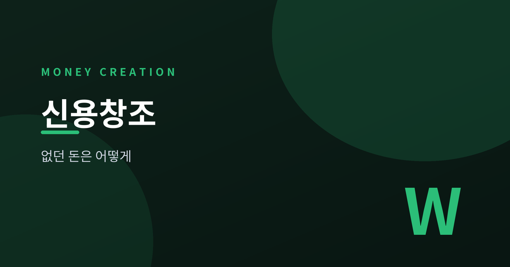
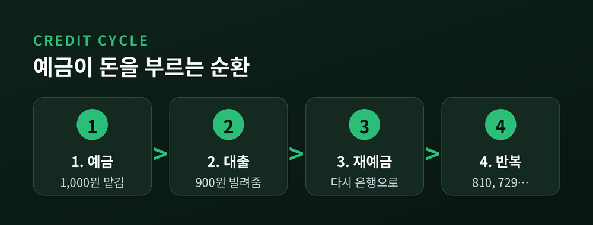
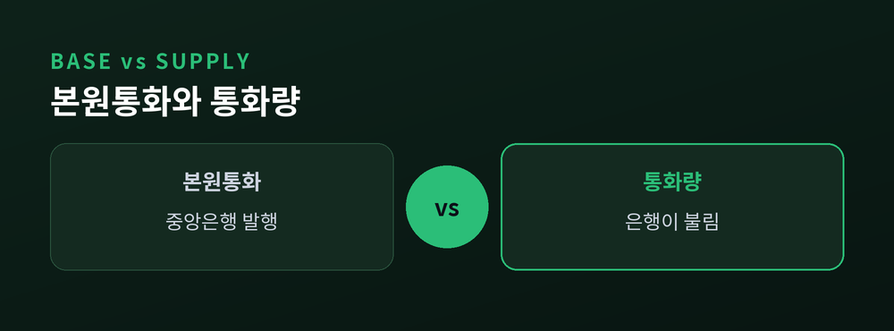
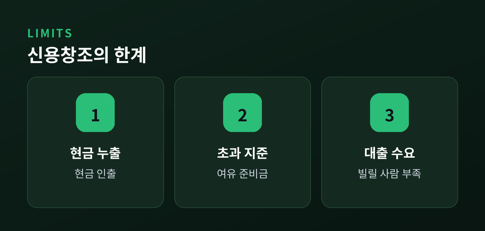
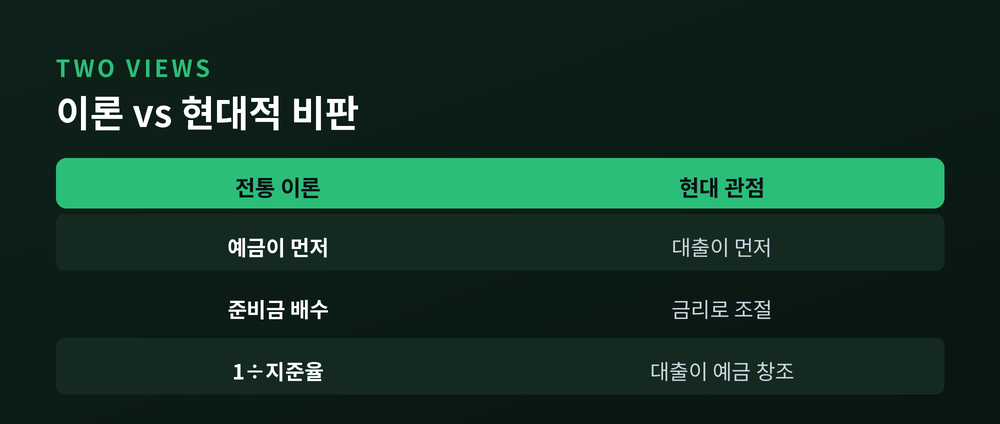

은행은 어떻게 없던 돈을 만드나

은행은 우리가 맡긴 돈을 금고에 그대로 쌓아두지 않습니다. 그 일부만 남기고 나머지를 빌려주며, 그 과정에서 원래 없던 돈이 생겨납니다. 이번 글에서는 신용창조와 통화승수라는 두 개념으로 이 원리를 정리해 보겠습니다.
은행은 예금 전액을 보관하지 않습니다.
일정 비율만 지급준비금으로 남기고, 나머지는 대출로 내보냅니다.
이것을 부분지급준비제도라고 부릅니다.
모든 예금자가 같은 날 돈을 찾지는 않는다는 통계적 경험이 이 제도를 떠받칩니다.
예금의 일부를 언제든 내줄 수 있는 상태로 남기는 이 방식은 지난 수십 년에 걸쳐 세계 은행 제도의 표준이 되었습니다.
여기서 신용창조가 시작됩니다.
지급준비율을 10%로 가정해 보겠습니다. 제가 1,000원을 맡기면 은행은 100원만 남기고 900원을 빌려줍니다. 그 900원이 다시 어딘가에 예금되면, 은행은 810원을 또 빌려줍니다. 이 순환이 반복되며 예금이 층층이 쌓입니다.

이 순환의 합계에는 공식이 있습니다.
1,000 + 900 + 810 + … 은 결국 최초 예금의 열 배, 즉 10,000원이 됩니다.
없던 9,000원이 시스템 안에서 창조된 셈입니다.
이 배율이 통화승수입니다. 단순하게 보면 '통화승수 ≈ 1 ÷ 지급준비율'입니다. 지준율이 10%면 승수는 10, 20%면 5입니다. 준비율이 낮을수록 돈은 더 크게 불어납니다.
직관은 이렇습니다. 각 단계에서 지급준비금만큼이 빠져나가고, 그 누출의 역수만큼 예금이 층층이 쌓입니다. 작은 씨앗 하나가 여러 겹의 예금으로 번지는 셈입니다. 참고로 우리나라의 법정 지급준비율은 예금 종류에 따라 0에서 7% 사이로 정해져 있습니다.
여기서 두 종류의 돈을 구분해야 합니다. 예전엔 중앙은행이 찍는 돈만 떠올렸다면, 지금은 은행이 불린 돈까지 함께 봐야 합니다. 중앙은행이 공급하는 현금과 지급준비금을 본원통화라 하고, 신용창조를 거쳐 시중에 도는 돈 전체를 통화량(M1·M2)이라 합니다. 통화승수는 이 둘의 비율입니다.

다만 현실은 교과서만큼 매끄럽지 않습니다.
순환의 각 단계에는 새는 구멍이 있습니다.
사람들이 대출금 일부를 현금으로 빼서 지갑에 두면 재예금이 줄어듭니다. 우리나라에서도 5만원권 발행 이후 현금이 보관 목적으로 쌓이며 통화승수가 크게 낮아진 적이 있습니다.
은행이 법정 기준보다 준비금을 여유 있게 쌓아두면 대출로 나가는 돈도 줄어듭니다.
무엇보다 빌리려는 사람이 없으면 신용창조는 일어나지 않습니다.
승수는 경기를 탑니다. 대공황 때는 은행의 신용창조가 위축되며 통화승수가 급락하기도 했습니다.

한 가지 논점을 덧붙이겠습니다.
교과서는 '예금을 받아 그 일부를 빌려준다'고 설명합니다. 본원통화를 몇 배로 불린다는 그림입니다.
그런데 영란은행은 2014년 보고서에서 현실은 반대에 가깝다고 지적했습니다. 은행이 대출을 실행하는 순간, 차입자 계좌에 새 예금이 곧바로 기록됩니다. 즉 대출이 예금을 만든다는 관점입니다.
이 시각에서 통화량은 준비금의 배수가 아니라, 은행의 대출 결정과 그것을 제약하는 금리·수익성·규제·대출 수요로 정해집니다. 자기자본비율 같은 건전성 규제도 대출 확장의 실질적인 상한으로 작동합니다.
중앙은행도 지급준비율보다는 주로 기준금리로 통화량을 조절합니다. 필요할 때는 자산을 직접 사들이는 양적완화로 통화량에 손을 대기도 합니다.
두 관점이 꼭 배타적인 것은 아닙니다. 통화승수는 규모의 감각을 주는 도구이고, 신용화폐론은 그 돈이 만들어지는 순서를 바로잡아 줍니다.

정리하면 이렇습니다.
부분지급준비제도 위에서 은행은 대출을 통해 없던 돈을 만들고, 통화승수는 그 규모의 감각을 알려줍니다. 다만 그 배율은 고정된 상수가 아니라, 사람들의 현금 선호와 경기, 그리고 은행의 대출 판단에 따라 움직이는 살아 있는 숫자입니다.
"은행이 만드는 돈은 종이가 아니라 약속입니다."
은행이 정말 없던 돈을 만드느냐고 물으신다면, 장부 위에서 그렇다고 답하겠습니다.
참고 소스